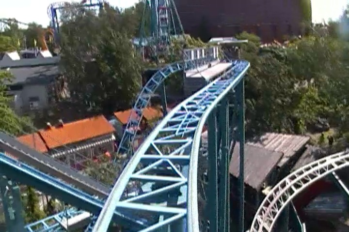
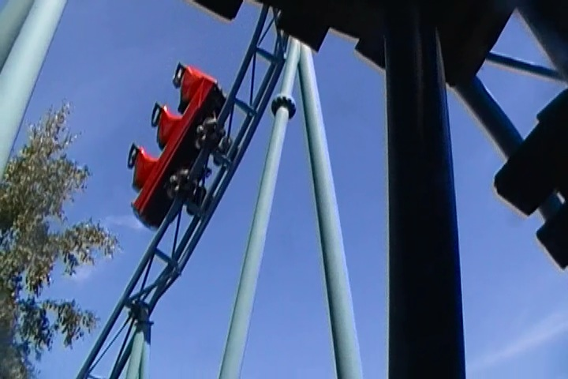

| |
Tulireki Review

We're here at Linnanmäki where we'll be reveiwing Tulireki. Now this is...an interesting ride for many different reasons. First of all, it's a Mack E-Motion coaster. If you're wondering what the hell that is, don't worry. Not knowing is perfectly understandable. You see, the Mack E-Motion coasters are super rare. Only two were ever built, and the other one closed in 2014. So this is the only one in all of existance. So what the hell is an E-Motion coaster? Well, first off, it's not a coaster that gets you all emotional inside. This is NOT Inside Out: The Ride (Who's your friend who likes to play?)! No, the Mack E-Motion coasters are coasters where the cars are programed to rock around the turns to make it more thrilling and exciting. Yeah. That sounds great. But there's a reason that only two were built and one still exists. It's not very thrilling. You barely notice the rocking, and the entire thing feels pointless. All right. Let's ride and see how this thing is. We head around a turn and start climbing up the lifthill. Hmm, this lifthill is really steep. Hopefully this'll result in some steep drops. We reach the top, and head around a sharp turn. Head into some straight track, and around another really sharp turn. Yeah. This just sort of seems like a wild mouse at this point. Huh? What's that? There was rocking? I never noticed it. In fact, it seemed kind of weaker than your average wild mouse. We go around some straight track and head around a banked curve. Yeah. You definetly notice the rocking here, but it's so damn mild. And still pointless. We then head down a small drop to the ground. Wee. I honestly expected something bigger. We then up a curved hill, and there goes all the speed we just gained. Though we have some height now. We head around another sort of banked helix curve. There's some rocking here. But there's still no point. We head around a curve and into a midcourse brake. This slows us down and we head into a banked turn out of it. This sort of gives us a little bit of speed, and then head around another curved turn. Eh, still not feeling the rocking. And that's it. Into the final brake run. God damn. That is underwhelming. I think this is a prototype for a type of coaster that Mack thought sounded really cool on paper, and this was just the coaster to test out all the technology. But the technology isn't anything special. It adds nothing to the ride. And because of that, the ride sucks as they really didn't add too much else to the ride, as it's just a couple wild mouse turns, and some more helixy turns. There's really only one drop on the ride. It's just a really underwhelming ride. But on the bright side...Eh...It's unique. I do like unique rides. So I'm still glad I rode it. Even if I don't think it's a very good ride.
5/10
Location: Linnanmäki
Opened: 2004
Built by: Mack
Last Ridden: June 28, 2014
Tulireki Photos




Home
|